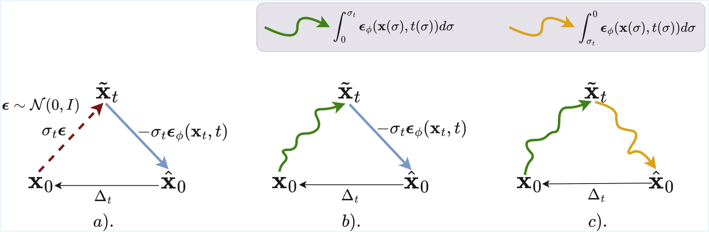
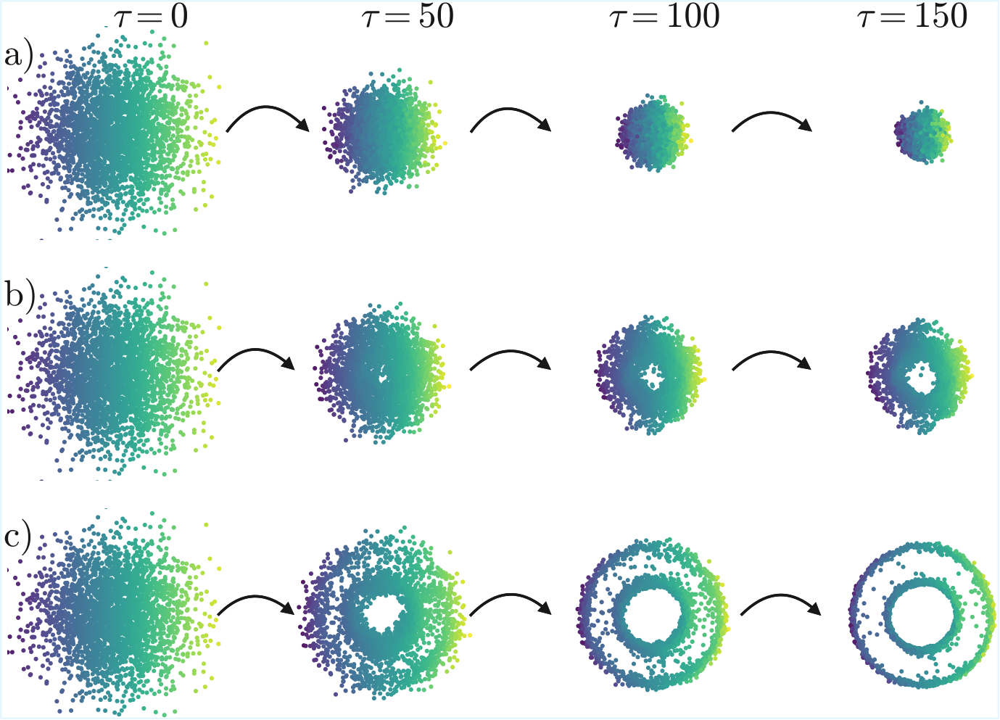
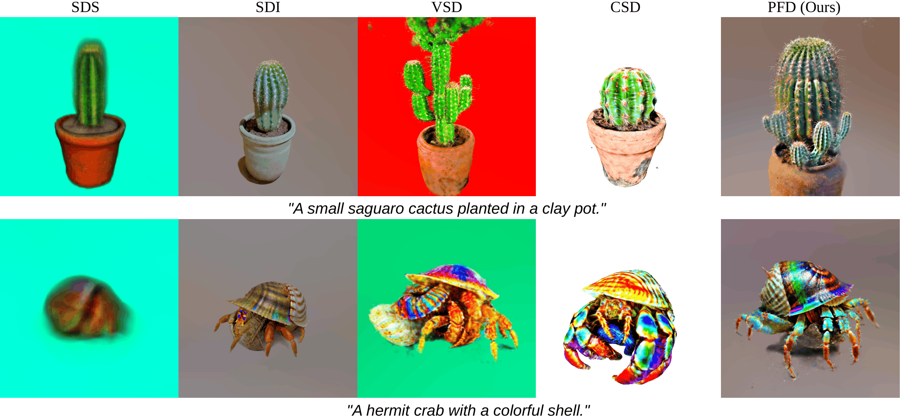

SDS-style methods enable sampling in parameter space via optimization but suffer from mode collapse and biased gradients; we propose Probability-Flow Distillation (PFD), inducing Wasserstein gradient flow for improved distribution matching.
Score Distillation Sampling (SDS) and its variants have been widely used for text-to-3D generation by distilling 2D image diffusion priors. However, the standard SDS objective is prone to severe mode collapse, frequently yielding over-smoothed and over-saturated results. Although recent advancements, such as Score Distillation via Inversion (SDI), mitigate these artifacts and produce visually sharper models, they ultimately fail to faithfully capture the full target distribution. In this work, we show that the bottleneck limiting the sampling capacity of SDI stems from its reliance on the posterior mean estimator, which is mathematically equivalent to a single-step Euler approximation of the deterministic reverse DDIM trajectory. To address this, we propose Probability-Flow Distillation (PFD), replacing this approximation with exact integration of the PF-ODE. We establish that PFD corresponds exactly to a Wasserstein gradient flow, inducing principled distribution-matching dynamics. PFD synthesizes 3D assets with fine-grained, high-fidelity details and achieves improved quality compared to existing methods.
The starting point of PFD is a simple observation about the DDIM posterior mean estimator. Given a noisy sample \( \mathbf{x}_t \), the standard estimate of the clean sample is
We show that this estimator is mathematically equivalent to a single explicit Euler discretization step of the DDIM Probability-Flow ODE, evaluated at \( (\mathbf{x}_t,t) \) and integrated along the reverse-time trajectory from \( t \) to \( 0 \) with step size \( \Delta \sigma = -\sigma_t \).
This perspective reveals a common ground in the gradient estimator used by both SDS and SDI. While SDI replaces the noisy forward perturbation used in SDS with DDIM inversion, both methods still rely on exactly the same single-step Euler approximation when traversing the reverse trajectory. Once viewed through this lens, a natural question arises: if the posterior mean is merely a single Euler step of the PF-ODE, why stop at one step? Why not integrate the PF-ODE itself exactly (at least in theory)? This is precisely the idea behind PFD, as illustrated below. But why should this lead to a better algorithm? Continue reading to find out!

Figure 1. (a) SDS: noisy sample via Gaussian perturbation; reverse via single Euler step (posterior mean). (b) SDI: forward via DDIM inversion; reverse still a single Euler step. (c) PFD (Ours): both forward and reverse via exact PF-ODE integration, eliminating the posterior mean approximation entirely.
Beyond being a natural extension to SDI, PFD has a deeper theoretical interpretation. Our main theoretical result shows that the PFD gradient exactly matches the Wasserstein gradient of a time-averaged KL divergence functional between the generated distribution and the target diffusion prior:
where \( \mathcal{F}[q_0] = \mathbb{E}_t[w(t) D_{\mathrm{KL}}(q_t \,\|\, p_t)] \). In other words, the particle dynamics induced by PFD follow a gradient flow in Wasserstein space, with a global minimum at \( q_0 = p_0 \), i.e., when the generated distribution matches the target distribution.
This perspective also helps explain an important empirical difference between SDS, SDI, and PFD. SDS is fundamentally mode-seeking, while SDI alleviates this behavior to some extent but still struggles to faithfully capture the full target distribution. In contrast, PFD performs distribution matching through its underlying Wasserstein gradient flow. The simple 2D experiment below provides a visual illustration of this behavior.

Figure 2. Particle evolution on a concentric circles target distribution (columns: optimization steps \( \tau \) = 0, 50, 100, 150). (a) SDS collapses to a single mode. (b) SDI partially recovers the support but misses fine structure. (c) PFD (Ours) faithfully reconstructs the full multi-modal distribution.
In this toy example, a secondary network is trained to learn the score of the current particle distribution in order to solve the forward PF-ODE in both SDI and PFD. This differs slightly from the SDI algorithm as originally described in their paper; we refer interested readers to our paper for a detailed discussion.
We apply PFD to text-to-3D generation as a natural testbed for the algorithm. We would like to emphasize, however, that text-to-3D is not the primary contribution of this work. Rather, the main contribution lies in the theoretical insights, the unifying perspective on existing methods, the PFD algorithm itself, and the accompanying proof. We hope these ideas provide a foundation that the community can build upon. Text-to-3D serves as a compelling application domain, particularly since the line of work leading up to PFD has been primarily focused on text-to-3D generation.
To make the method tractable, we employ approximations akin to those used implicitly in prior work. we use standard DDIM inversion as a surrogate for the forward PF-ODE and as a consequence we can operate in the single-particle regime. These approximatons are justified in the paper. Despite this, PFD achieves results competitive with VSD — the current state-of-the-art, which requires LoRA fine-tuning of the diffusion model and beat VSD with similar approximations made which is CSD, and obviously performs better than SDS and SDI. See the qualitative comparison below To make the method tractable for 3D generation, we employ an approximation used implicitly in prior work. In particular, we use standard DDIM inversion as a surrogate for the forward PF-ODE, allowing us to operate in the single-particle regime. The rationale behind these approximations is discussed the paper. Despite these approximations, PFD achieves results competitive with VSD, the current state-of-the-art method, which requires LoRA fine-tuning of the diffusion model. PFD also compares favorably to CSD, which can be viewed as an approximation to VSD and relies on approximations similar to those we employ when adapting the general PFD framework to text-to-3D generation. Moreover, PFD consistently produces stronger results than SDS and SDI. A qualitative comparison is shown below.
Comparison against SDS, SDI, VSD, and CSD across a range of text prompts. PFD (rightmost) consistently produces sharper geometry and richer texture than SDS and SDI, and is competitive with VSD.

Figure 3. Qualitative comparison on text-to-3D generation. Columns left to right: SDS, SDI, VSD, CSD, PFD (Ours).
The text-to-3D implementation presented here is deliberately minimal. Many design choices and avenues for improvement — including the ODE solver, representation architecture, multi-view consistency mechanisms, and the multi-particle setting — remain largely unexplored. Consequently, the current implementation still suffers from issues such as the Janus problem, unintended scene expansions, and floaters. We strongly encourage the community to build upon PFD, as better instantiations are likely to yield substantially improved results.
"A baby bunny on a stack of pancakes."
"A small saguaro cactus planted in a clay pot."
"A DSLR photograph of a beautifully decorated cupcake."
"A DSLR photograph of a hamburger."
"A lionfish."
"A 3D model of an adorable cottage with a thatched roof."
@misc{rrohithpfd2026,
title = {Probability-Flow Distillation: Exact Wasserstein Gradient
Flow for High-Fidelity 3D Generation},
author = {Rohith Ramanan and A. N. Rajagopalan},
year = {2026},
eprint = {2605.09071},
archivePrefix = {arXiv},
primaryClass = {cs.CV},
url = {https://arxiv.org/abs/2605.09071}
}